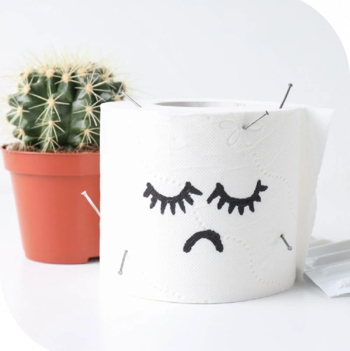
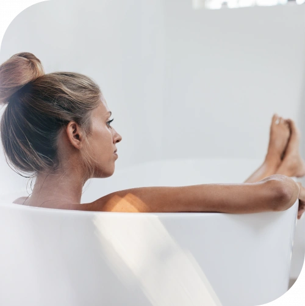

Interni
Sunt în interiorul canalului anal și nu provoacă dureri.
Hemoroizii protejează sfincterul anal, ajută la închiderea canalului anal când presiunea abdominală crește și contribuie la diferențierea gazelor de materiile fecale. Din cauza vascularizării și localizării lor, se pot inflama și pot cauza boala hemoroidală.

Factorii favorizanți sunt încordarea la constipație, obezitatea, sarcina, diareea și constipația cronică, sedentarismul, consumul redus de lichide, abuzul de alcool, dieta săracă în fibre și slăbirea țesutului de susținere odată cu vârsta.
Netratată, afecțiunea poate produce tromboză, durere perianală severă, sângerare și anemie prin pierderi cronice de sânge.

Sunt în interiorul canalului anal și nu provoacă dureri.
Se dezvoltă lângă anus; pot apărea sângerări, dureri locale și umflături.
Apar când se formează cheaguri de sânge în umflăturile hemoroizilor externi.
Produsele cu aplicare locală pot ameliora temporar simptomele și pot contribui la îmbunătățirea calității vieții. În funcție de compoziție, acestea pot avea acțiune astringentă, protectoare, decongestionantă sau anestezică. Folosirea regulată a cremelor, unguentelor ori supozitoarelor la debutul manifestărilor poate reduce disconfortul și inflamația.
Printre opțiunile minim invazive se numără ligatura cu bandă elastică. Medicul aplică o bandă în jurul hemoroidului pentru a-i limita alimentarea cu sânge, iar acesta se desprinde ulterior. Deoarece procedura poate provoca durere și complicații, indicația trebuie stabilită de specialist în funcție de starea pacientului și de riscurile asociate.
Tratamentul conservator începe, de regulă, cu un aport suficient de fibre, consum mai mare de apă și băi de șezut cu apă caldă. Aceste măsuri ajută la reglarea tranzitului, reduc traumatizarea hemoroizilor și sângerarea și pot calma temporar durerea.
